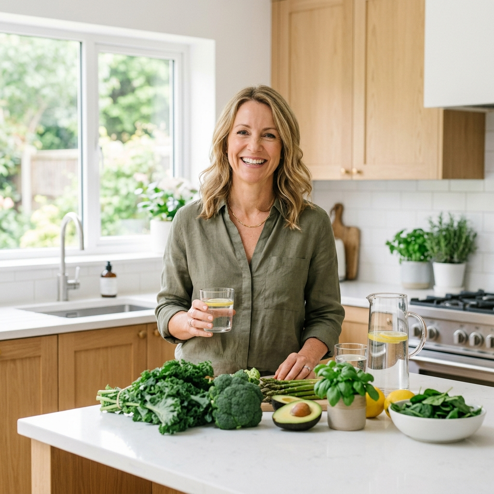
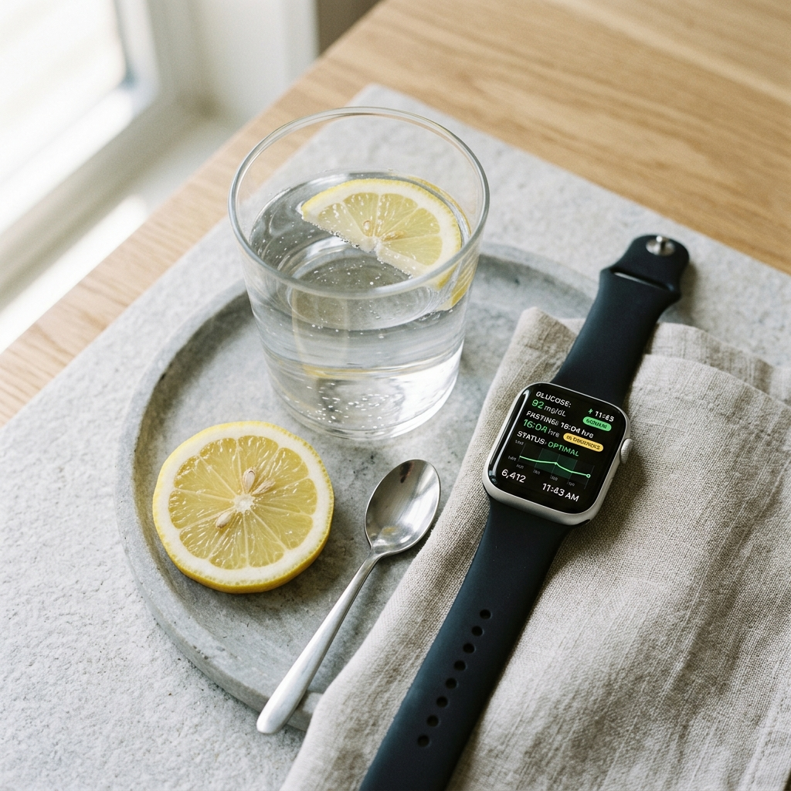
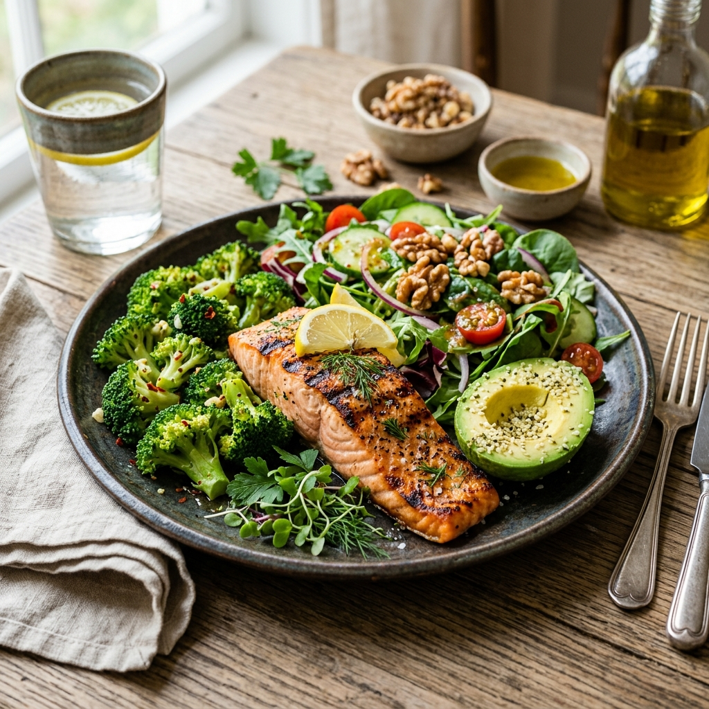

İlham Veren Dönüşümler
1.240'tan fazla kişi Dr. Bakırcı'nın protokolleriyle hayatını dönüştürdü. İşte onların gerçek hikayeleri.

Hikaye
34 kg vererek pre-diyabetimi tersine çevirdim
Dr. Bakırcı'nın longevity protokolünü uygulamak metabolik sağlımı ve enerji seviyelerimi tamamen dönüştürdü.

Hikaye
90 günde kan şekerim normale döndü
Doktorum şoke oldu. Aralıklı oruç ve doğru beslenmeyle HbA1c değerim önemli ölçüde düştü.
Hikaye
8 haftada 22 kg verdim, enerji doluyum
Artık ne yiyeceğimi ve nedenini anlıyorum. İçerikler bilimsel ve uygulaması çok kolay.
Hikaye
6 ay sonra kronik yorgunluğum tamamen geçti
Beslenme rehberini uygulamak enerjimi baştan aşağı değiştirdi. 52'mde 30'lumdaki gibi hissediyorum.

Hikaye
Tiroid sağlığım longevity diyetiyle düzeldi
Yıllarca süren tiroid sorunlarımın ardından, Dr. Bakırcı'nın önerdiği diyet değişiklikleri inanılmaz fark yarattı.
Hikaye
İnsülin direncimden kurtuldum
3 ay içinde insülin direncim tamamen ortadan kalktı. Artık ilaç kullanmıyorum ve enerjim tavan yapmış.